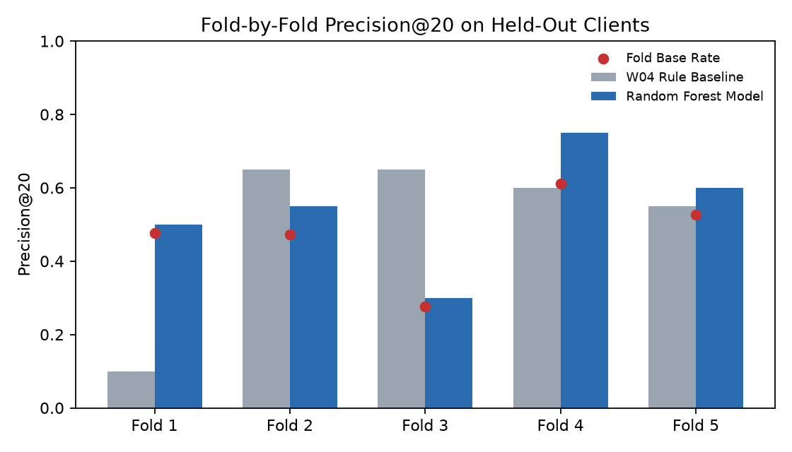
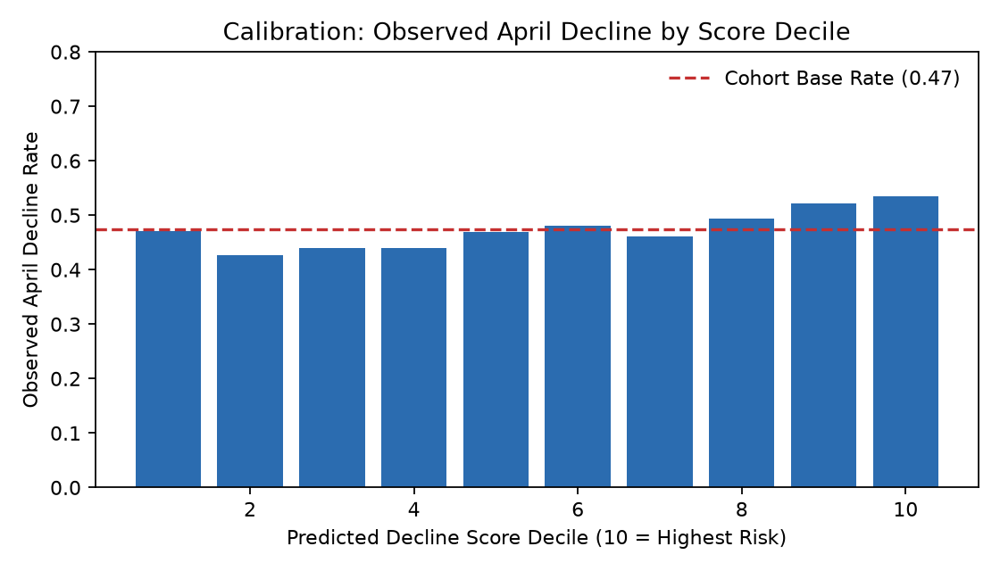
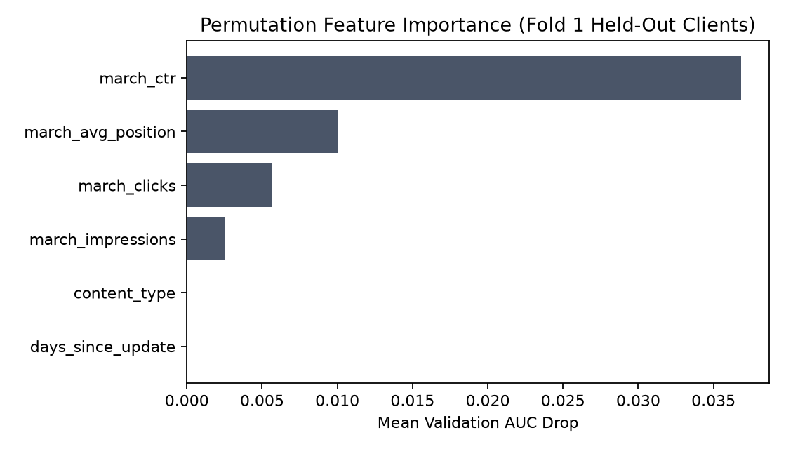
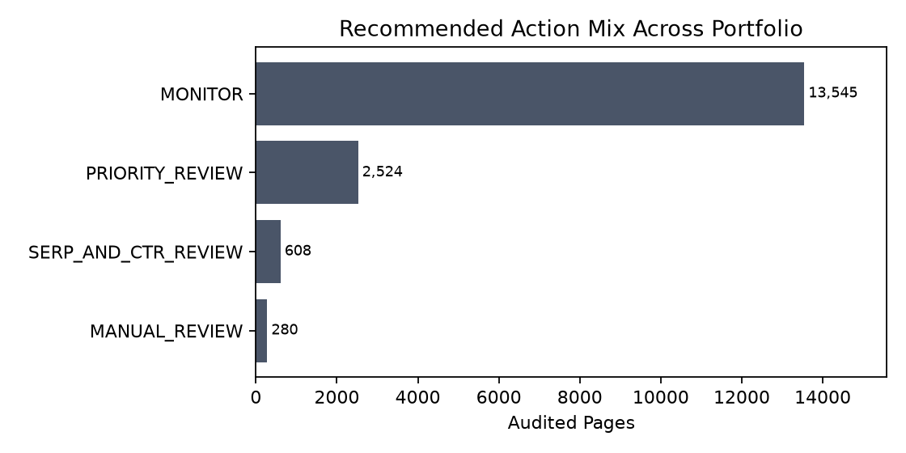

Out of thousands of web pages across an enterprise portfolio, which ones should human editors review first to protect organic search traffic before decline sets in? We examine whether an interpretable machine learning model can prioritize pages for review more effectively than a traditional heuristic rule. Using daily search and web analytics records from the FlyRank research warehouse, we constructed an audited cohort of 16,957 published pages across 26 clients, defining an operational decline proxy as a month-over-month impression drop ≥ 30% between March and April 2026. Evaluated under strict 5-fold client-grouped cross-validation where no client's pages appear in both training and test sets, a Random Forest model achieved a mean Precision@20 of 0.540 ± 0.164 compared to 0.510 ± 0.233 for the baseline rule and an overall base rate of 0.474. We translate these predictions into an operational content action playbook with transparent reason codes and error boundaries, providing directional decision support for human editorial workflows without overclaiming causal impact.
Enterprise digital publishing operations frequently manage libraries spanning tens of thousands of published URLs. In search discoverability, content quietly decays: ranking positions slip, click-through rates erode, and organic impressions drop. Because in-depth content optimization requires human editorial effort—fact checking, intent re-alignment, and copywriting—human review capacity is strictly bottlenecked. An editorial team can typically review only 20 to 50 URLs in a weekly review sprint.
Treating all pages equally or sorting purely by raw traffic leads to severe misallocation of labor. The core decision this investigation supports is:
The error costs are inherently asymmetric. A false positive wastes roughly 15 minutes of editorial labor inspecting a stable page. A false negative misses a high-visibility asset in active decay, permanently conceding search market share to competing domains. We investigate whether observable search signals (impressions, average position, CTR) combined through machine learning can concentrate true declining pages into the top ranks more consistently than static heuristics.
This research is built on the FlyRank Search Intelligence Warehouse, hosted on Hugging Face (FlyRank/internship-warehouse). The broader research repository contains approximately 79 million daily performance records across 104 pseudonymized enterprise client domains over a 17-month longitudinal panel, tracking Google Search Console (GSC) performance and Google Analytics 4 (GA4) traffic.
To prevent data snooping across future calendar periods while maintaining clean temporal isolation, our experimental study cohort isolates the transition between March 2026 and April 2026:
dim_content and joined on cryptographic identifiers.
All client and content identifiers are pseudonymized using SHA-256 cryptographic hashes (client_hash_id, content_hash_id). No client names, URLs, page titles, or raw keyword strings appear in this research.
To avoid temporal leakage, all content items where content_updated_date > 2026-03-31 were excluded from the analysis cohort. Furthermore, pages were required to have established minimum search visibility (≥ 100 March impressions) and reliable outcome tracking (≥ 20 days of active GSC reporting in April). This yielded an audited experimental cohort of 16,957 pages across 26 client domains, with an overall monthly decline base rate of 0.474 (47.4%).
Rather than claiming to reverse-engineer Google's underlying ranking algorithm, we construct an objective operational decline proxy:
Y = 1 if (April Impressions − March Impressions) / March Impressions ≤ −0.30, else 0
A page is labeled positive if its search visibility contracted by 30% or more month-over-month.
The feature vector comprises 9 leakage-safe signals:
march_impressions: Total search impression demand in March.march_clicks: Total search clicks captured.march_ctr: March click-through rate (march_clicks / march_impressions).march_avg_position: Median ranking position across queries (0 = unranked/sparse).march_pageviews: Total GA4 pageviews.march_sessions: Total GA4 sessions.march_engaged_sessions: Total GA4 engaged sessions.days_since_update: Content age as of March 31, 2026.content_type: Editorial format classification (keyword article, comparison, etc.).In multi-tenant search portfolios, conventional random train/test splits suffer from domain memorization leakage: URLs sharing a client domain share backlink profiles, domain authority, technical CMS templates, and tracking setups.
We enforce 5-fold GroupKFold by client. Entire client portfolios are held out together. A model evaluated on Fold k is tested exclusively on client domains it has never encountered during training.
We benchmark against the transparent W04 heuristic baseline rule currently employed in standard SEO auditing: flag pages that are stale (≥ 180 days since update) and visible (≥ 500 March impressions), ordered by impression volume.
The Random Forest model (300 estimators, balanced class weights, median imputation) and the W04 baseline were evaluated on the exact same 5 client holdout folds using Top-20 Precision (Precision@20).
| Fold | Held-Out Clients | Pages | Fold Base Rate | W04 Baseline P@20 | Random Forest P@20 | Model AUC |
|---|---|---|---|---|---|---|
| Fold 1 | 1 | 7,473 | 0.477 | 0.100 | 0.500 | 0.548 |
| Fold 2 | 1 | 5,804 | 0.472 | 0.650 | 0.550 | 0.526 |
| Fold 3 | 8 | 1,227 | 0.277 | 0.650 | 0.300 | 0.525 |
| Fold 4 | 7 | 1,227 | 0.612 | 0.600 | 0.750 | 0.582 |
| Fold 5 | 9 | 1,226 | 0.526 | 0.550 | 0.600 | 0.536 |
| Summary (Mean ± Std) | 26 | 16,957 | 0.474 | 0.510 ± 0.233 | 0.540 ± 0.164 | 0.533 (Pooled) |


To rigorously investigate what the model learned without confusing association with causation, we evaluated both tree Mean Decrease in Impurity (MDI) and out-of-fold Permutation Importance on held-out validation clients:

In permutation testing on unseen domains, search capture efficiency (march_ctr, +0.0369 AUC drop) and SERP ranking position (march_avg_position, +0.0100 AUC drop) proved to be the most influential signals. Conversely, days_since_update exhibited 0.0000 permutation importance. In this snapshot, update dates clustered heavily around 34 days, indicating that content age serves as an editorial diagnostic during manual review rather than an autonomous predictive signal of decay.
A key hallmark of honest applied machine learning is defining explicit boundaries where findings cease to apply.
In accordance with rigorous claim discipline, our empirical findings are bounded as follows:
| Claim Tier | Scientific Boundary Statement |
|---|---|
| Supported | Under strict client-held-out cross-validation, the Random Forest model achieved higher and more consistent mean Precision@20 (0.540 ± 0.164) than the W04 heuristic baseline (0.510 ± 0.233) against a 0.474 base rate. |
| Plausible | Combining CTR, average ranking position, and search visibility signals helps concentrate human editorial review on URLs with elevated probability of monthly traffic contraction. |
| Not Demonstrated | This research does not reverse-engineer Google's ranking algorithm, does not prove causal mechanisms of decay, and does not guarantee that updating a flagged page will restore search rankings. |
A model score is not a final product. In production, raw decline probabilities are converted into an actionable review queue paired with transparent reason codes and error boundaries.

| Archetype | Observable Signals | Recommended Editorial Action | Error Boundary ("What would make it wrong") |
|---|---|---|---|
| High Risk + High Visibility + Strong Ranking | Top 20% model score, ≥ 500 impressions, position ≤ 10 | PRIORITY_REVIEW: Audit search intent, snippet presentation, and content freshness. |
April drop was caused by a seasonal trend, tracking anomaly, or client-wide domain issue rather than page-level quality. |
| High Risk + Strong Ranking | Top 20% model score, position ≤ 10, lower volume | SERP_AND_CTR_REVIEW: Evaluate SERP title/meta description and competitor snippets. |
Position reflects an average over sparse long-tail queries; core query intent is unchanged. |
| High Risk Only | Top 20% model score, low volume or unranked | MANUAL_REVIEW: Investigate keyword indexing and technical health before editing. |
Model score is driven by low-volume statistical noise rather than genuine decay. |
| Lower Risk Cohort | Bottom 80% model scores | MONITOR: Retain standard monitoring; do not expend manual review hours. |
A real decline is overlooked due to model under-scoring on an uncommon content format. |
Before any editorial intervention is executed, editors must complete a 6-step verification:
HIGH_VISIBILITY, RANKING_SIGNAL); never edit based solely on MODEL_HIGH_SCORE.In accordance with computational reproducibility best practices, every artifact and metric reported in this paper can be replicated directly from the open-source repository.
# Clone repository and install dependencies
git clone https://github.com/rasheed-hammad/machine-learning-starter.git
cd machine-learning-starter
python -m venv .venv
.\.venv\Scripts\activate
pip install -r requirements.txt
# Run full audited capstone pipeline top-to-bottom
python -m jupyter nbconvert --to notebook --execute --inplace work/notebooks/capstone.ipynb
Deterministic random seeds (seed = 42) are fixed across all cross-validation splitters and Random Forest estimators. Exact metric receipts are tracked in work/outputs/w07_playbook_metrics.json.
@article{rasheed2026searchintel,
title={Applied Search Intelligence: Optimizing Enterprise Content Prioritization Under Client-Grouped Holdouts},
author={Rasheed, Muhammad Hammad},
journal={FlyRank Applied Machine Learning Research},
year={2026},
url={https://rasheed-hammad.github.io/machine-learning-starter/}
}Built on the FlyRank ML Internship dataset provided by FlyRank (https://flyrank.ai). We express gratitude to the FlyRank engineering and research teams for providing secure, anonymized access to multi-tenant search performance infrastructure and data warehouse tables.